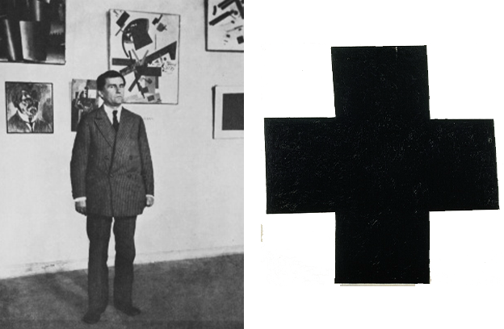
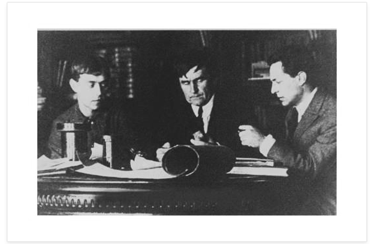

La Filosofía
Malevich, aún no siendo un artista destacado por la calidad de su pintura, como pionero de la abstracción estricta sí fue uno de los más arriesgados pioneros de la vanguardia dura.
Suprematismo significaba para él; supremacía del sentimiento puro en el arte. Que venía de un sentimiento de no-objetividad, ya que pretendía, según sus palabras, "liberar al arte del lastre del mundo de las cosas".
Esto nos lleva nuevamente a sus pinturas, en las cuales el mostraba el deseo del cambio producido por un horror anterior.
A lo que se lo interpretó como símbolo de revolución.


Los creadores y artistas que realizaban el Suprematismo no solo veían la parte artística, sino que también había una filosofía y estilo de vida detrás. Era su manera de represntar a la nueva Rusía revolucionaria.
A Malévich se lo tomaba en el mundo artístico, como "vehículo de trasformación espiritual", de la Revolución.
Él mostraba la inversión estética en algún tipo de orden, el cual daba lugar a una decisión, que genere un desplazamiento en la ético-política, para enfrentarse al orden normativo y superarlo.
En conclusión, el Suprematismo es arte militante que,
"lucha por una nueva cultura y nuevo humanismo".